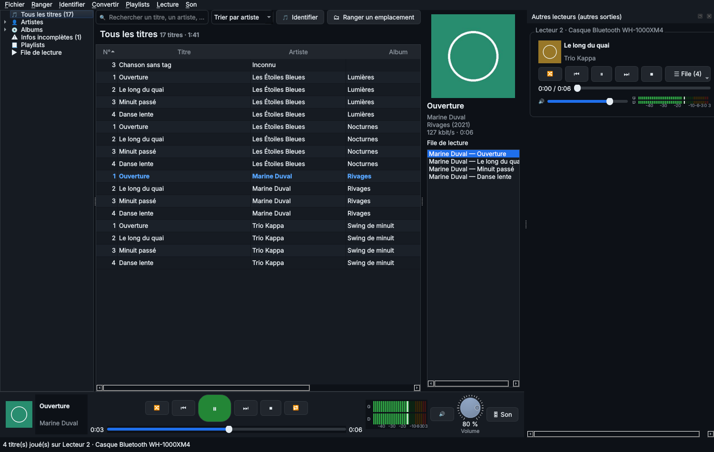

9. Plusieurs sorties et plusieurs lecteurs
Le son sur 2 ou 3 périphériques en même temps
Dans le panneau Son, ＋ Ajouter une sortie : haut-parleurs, casque, enceinte Bluetooth, écran HDMI, DAC USB… Chaque sortie a son onglet, avec :
- son périphérique, et le bouton 🔔 qui joue un bip de test pour le reconnaître ;
- son volume et ses voies : stéréo, inversée, mono, gauche seule, droite seule ;
- son égaliseur, son ambiance, ses effets et son audiogramme, indépendants des autres sorties ;
- un retard (en ms) pour aligner les sorties entre elles.
Les sorties restent synchronisées automatiquement, même si les cartes son n'ont pas exactement la même horloge.
Une enceinte Bluetooth a souvent 150 à 250 ms de retard. Retardez d'autant les autres sorties pour que tout soit aligné.
Une autre musique sur une autre sortie
Musicothèque a jusqu'à 3 lecteurs : le lecteur principal, le Lecteur 2 et le Lecteur 3. Chacun a sa file, ses commandes, son volume, l'aléatoire et la répétition.

Le Lecteur 2 joue une autre musique sur le casque Bluetooth.
- ＋ Ajouter un lecteur (panneau Son, ou menu Son) crée le Lecteur 2, puis le Lecteur 3, chacun avec sa sortie.
- Vous pouvez aussi ajouter une sortie, puis choisir Lecteur 2 dans sa liste Lecteur.
- Clic droit sur des titres, un album, un artiste ou une playlist ▸ 🎧 Lire sur un autre lecteur ▸ Lecteur 2 ▸ Lire maintenant ou Ajouter à sa file.
- Le panneau Autres lecteurs, à droite, pilote les lecteurs 2 et 3 : ⏮ ⏯ ⏭, aléatoire, avancement, volume et file. Il s'affiche aussi par Son ▸ Afficher les autres lecteurs.
Plusieurs sorties peuvent écouter le même lecteur : par exemple le salon et la cuisine sur le lecteur principal, et le casque Bluetooth sur le Lecteur 2. Jusqu'à 6 sorties en tout.
Enceintes et casques Bluetooth
- Windows : appairez d'abord l'appareil dans Paramètres ▸ Bluetooth et appareils. Il apparaît ensuite dans la liste des périphériques.
- Raspberry Pi : Outils ▸ 📶 Bluetooth appaire et connecte l'appareil depuis l'écran tactile (voir chapitre 10).
◀ 8. Audiogramme et test auditif · Sommaire · 10. Version tactile (Raspberry Pi et autres cartes) ▶